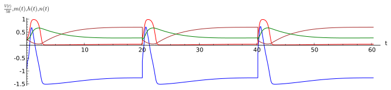

Numeryczna analiza rozwiązań układu Hodgkina-Huxley’a¶
Przeanalizujmy numerycznie układ Hodgkina-Huxley’a. W tym celu zdefiniujmy funkcje \(\alpha_m\), \(\beta_m\) itp., Prawe strony całego układu równań różniczkowych zapiszemy na liście rhslst, a zmienne na liście varlst.
Zdefiniumy sobie dwa zestawy parametrów, bez sygnału - set1 i z sygnałem set2:
Charakterystyczne zachowanie się układu jest widoczne w dwóch typowych rozwiązaniach:
dla \(V_0 = -60\) (czerwony) mamy charakterystyczny pik i relaksację
dla \(V_0 = -30\) (zielony) mamy relaksację
Możemy dokładnie przyjrzeć się jak zmienia się rozwiązanie w zależności od warunku początkowego, manipulując elementem interaktywnym:
Sygnałem dla neuronu jest \(I_{ext}\) - powoduje on zmniejszenie potencjału tak, że neuron znajduje się w reżimie „spike”. Możemy przekonać się jak ciąg „spike”ów prądu \(I_{ext}\) przekłada się na reakcę neurownów. W tym celu wykonujemy naprzemian:
przez któtki czas symulujemy układ z \(I_{ext}=120\) (set2)
następnie wykorzystuąc stan układu jako warunek początkowy symulujemy przez dłuższy czas układ przy \(I_{ext}=0\) - czyli dla zestwu parametrów set1
Poeksperymentujmy sami: